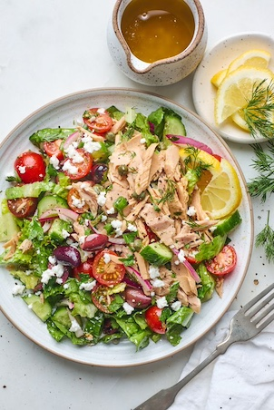

<!DOCTYPE html>
<html lang="en>

<head>
    <meta charset=" UTF-8">
<meta name="viewport" content="width=device-width, initial-scale=1.0">
<title>Tuna Salad Recipe</title>

</html>
<style>
    body {
        background-image: url(bg.png);
        background-size: cover;
        font-family: 'Courier New', Courier, monospace, 'Times New Roman', Times, serif, sans-serif;
        color: #008080;
    }
</style>

<body>

    <header>
        <h1>Welcome to the Tuna Salad Recipe</h1>
        

        <h2>Ingridients:</h2>
        <ul>
            <li>1 can of Tuna</li>
            <li>1/2 cup oliv oil</li>
            <li>1/4 cup diced tomato</li>
            <li>1/4 cup diced avocado</li>
            <li>1/2 cup chopped lettuce</li>
            <li>1/4 cup olives</li>
            <li>1/4 cup fresh feta cheese</li>
            <li>1/4 cup diced red onion</li>
            <li>1 tablespoon Dijon mustard</li>
            <li>Fresh lemon juice + 2 lemon slice</li>
            <li>Optional: Chopped fresh parsley or dill for garnish</li>

        </ul>
        <h2>Instructions:</h2>
        <ol>
            <li>Drain the tuna and place it in a mixing bowl.</li>
            <li>Add olive oil, diced tomato, diced red onion, Dijon mustard, salt and pepper.</li>
            <li>Mix all the ingredients together until well combined.</li>
            <li>Squeeze fresh lemon juice over the mixture to add a zesty flavor.</li>
            <li>Refrigerate for at least 30 minutes before serving.</li>
            <li>Garnish with chopped fresh parsley or dill if desired.</li>

        </ol>
        <footer>
            <h3>Enjoy &hearts; </h3>
        </footer>
    </header>
</body>

</html>